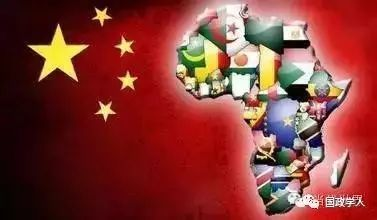

收录于合集
２１世纪以来的中非关系研究 ——张春研究员访谈
本文来源： 《国际政治研究》2017年第1期
本文获取： 后台回复“ 国际政治研究 ”自动获取
编者按
自2000年以来，中国的中非关系研究取得了一系列进展，学科方法渐趋多元，研究议程也明显深入。那么，当代中国的中非关系研究主要经历了哪些发展阶段？每个阶段背后的主要驱动力是什么？中非关系研究是否产生理论？它将对中国特色的国际关系理论、外交理论等产生何种影响？对建构具有中国特色的非洲学而言，下一阶段的主要任务有哪些？本刊特约记者、北京大学国际关系学院博士生曹德军就上述议题专访上海国际问题研究院张春研究员，他的主要研究领域为非洲和平安全、大国对非战略比较等，著有《中非关系国际贡献论》《地方参与中非合作研究》等。

一、当前中非关系研究的演进
曹德军（以下简称“曹”）：请您简要概括一下当前中国的中非关系研究发展状况？
张春（以下简称“张”）：中非关系研究其实是一个跨学科的研究议程。基于我个人研究范围与学术方向，这里所讨论的主要涉及中非关系中的国际关系研究，基本不涉及如文学、艺术、考古等其他学科领域的研究。自２０００年以来，中非关系研究的确是中国学术界特别是国际关系研究中发展最快的领域之一。
尽管大多数国内学者都倾向于将自２０００年以来的包括中非关系研究在内的中国非洲研究视作一个整体即快速发展阶段，如北京大学的李安山教授、浙江师范大学的刘鸿武教授等。如果深入考察过去１６年来中非关系研究的发展，仍可进一步将其细分为三个阶段，基本路径是从历史研究、学理研究占主导转向现状研究、政策研究占主导。这很大程度上与中非关系进入新世纪以来的快速发展相关。
第一阶段大致从２０００年至２００６年，即从中非合作论坛成立到中非合作论坛北京峰会召开。在很大程度上，这一时期的研究仍延续前一时期的特征，即以历史研究、国别地区研究和情况翻译与介绍为主，可称作是中非关系的基础研究。例如，华东师范大学艾周昌老师对非洲历史、法律等研究，中国社会科学院西亚非洲研究所杨立华老师对南非的研究，贺文萍老师对非洲民主化的研究，湘潭大学洪永红老师的非洲法研究，等等。导致延续大于转型的基本原因是，这一时期的中非关系很大程度上属于恢复性发展，原因在于中国启动改革开放后约有十余年时间事实上对中非关系不够重视；１９８９年“政治风波”后，中国重新意识到非洲的重视性，但更多是从政治角度重新重视；从经济角度重视非洲是在１９９７年９月“全国对非洲经贸合作工作会”后，这是自新中国成立以来的首次。换句话说，由于中非关系长期仅政治关系相对发达，经济、社会、安全等支柱严重滞后，因此，中非合作论坛成立后的头几年，很大程度上是在继续巩固政治关系的同时，逐渐提升其他支柱特别是经济关系。因此，处于恢复性发展中的中非关系决定了中国在非洲的利益需求不旺，也决定了学术研究更加注重学理分析、注重非洲自身发展的基本特征。需要指出的是，这一时期也存在一些现状性、政策性的讨论，但大多从冷战终结、国际体系转型等宏大视野出发，如中国社会科学院西亚非所张宏明研究员从展望２１世纪人类发展的视角考察中非政治合作，又如贺文萍对冷战结束后国际格局转换对中非关系影响的讨论。
第二阶段大致从２００７年到２０１２年，基本特征是基于外部批评或压力下的被动与反应式研究，其核心聚焦是为中国正名。随着２００６年中非合作论坛北京峰会的召开，美欧等西方国家心理严重失衡。它们片面鼓吹在非洲的“中国威胁论”，如中国在非洲支持“专制政权”，中国援助不附加条件破坏非洲良治，中非（军事）关系恶化非洲人道主义危机，中非贸易、投资和援助仅为获取自然资源，中国公司仅雇用中国工人，中国不关注环境和社会标准，等等。尽管自２００８年后逐渐回归冷静，但对中非关系的全方位攻击事实上是推动中国的非洲研究向更加系统化、理论化和官方化的方向发展。在这一过程中，很多主要受西方教育的非洲官方、学者、非政府组织人士也不加反思地照搬西方的逻辑和说辞。直到今天，西方和非洲仍不时听到一些对中非关系的质疑，但大多数都是在这一阶段出现并系统化和学理化的。正是由于面临上述舆论、道德“压力”———所谓“众口铄金”效应，在这一阶段中国非洲研究的核心努力是如何为中非关系“正名”。大致的努力可分为两类：一是直接的正名努力，如李安山教授就此所写专文；二是间接的正名努力，其数量相当多，其主旨均是对中非关系的整体或特定方面作辩护性研究，从而说明西方对中非关系的攻击或指责要么无中生有，要么也是情有可原。上述正名努力也的确发挥了重要的沟通、释疑作用，特别是对部分相对理性的观察者而言。
第三阶段是自２０１３年以来很大程度上“以我为主”的研究阶段。这一时期中非关系研究越来越多地从双边关系发展的现实需要特别是政策需求出发，成果数量在国际关系领域中占据压倒性优势。导致这一现象的原因有很多，最根本原因是中非关系的快速发展必然推动相关研究，直接原因则是研究经费的倾斜，可从两方面看：一是国际的，美欧等国大力资助涉及中非关系的课题、会议和调研，导致大量外国学者与中国非洲学者接触甚或咨询，间接推动国内相关研究力量的知识结构转变；二是国内的，国家社科基金等仍对非洲研究重视不够，例如，２０１２年国家社科基金共立项３２９１项，涉非项目仅六项，其中国际关系类仅一项；２０１６年国家社科基金共立项２８５６项，涉非项目仅四项，国际关系类零项。尽管如此，２００９年召开的中非合作论坛第四届部长级会议决定成立中非联合研究交流计划，并于２０１１年正式启动。该计划由财政部单列预算，每年资助１０余项课题研究、多次国际学术研讨会和学术交流，另支持多部相关著作出版。经过２０１１年和２０１２年的探索，中非联合研究交流计划的实施逐渐成熟，成果也日益深入，并从２０１１—２０１３年的３９项课题研究报告中遴选出１０篇先后于２０１２年和２０１４年结集出版（本人有三篇被收入）。考虑到学术研究往往需要一定资金支持，在其他经费相对匮乏背景下，中非联合研究交流计划的成立和落实对于推动中非关系研究有着重大的促进作用。但也应看到，中非联合研究交流计划由外交部非洲司负责组织，因此更加关注其政策意义，进而对整个中非关系研究的导向也产生了重要影响。在中非联合研究交流计划之外，随着中非关系的快速发展，中非智库论坛、“中非智库１０＋１０合作伙伴计划”等研究网络也在外交部非洲司主导下得以建立，使越来越多的研究机构、人员参与其中，这加速了中非关系研究转型，即从更注重学理研究、历史研究转向政策研究、现实研究。近年来出版的大量著作，都带有明显的现实政策研究色彩。而以教育部为主导的高校区域与国别研究中心、新型智库建设等，也带有明显的政策和现实导向；尽管不同部门的努力方向有所不同，但由于中国的非洲研究团体相对较小、人员不多，导致同一批人同时承接不同部门研究任务的现象普遍存在，增加了平衡政策研究与理论研究、基础研究的难度。
曹：您认为每个阶段背后的主要驱动力是什么？
张：由上面所分的三个阶段不难看出，中国的中非关系研究的基本特征或基本动力是中非关系发展或更深层次的中国国家利益需要，而不是由非洲自身的发展所主导。换句话说，总体而言，如果中非关系发展快，中非关系研究发展也就快；但如果中非关系发展慢或遇冷，相应的研究也可能遇冷。
曹：在中非关系的研究议题上，中国学者有哪些选题偏好？
张：中国学者的研究选题受现实发展和政策需要影响较大，而且立场往往站在中国角度，这是一种从中国视野下的中非关系研究“供应学派”，换句话说，重点研究中国能对非洲做什么，对非洲的真正需要重视度相对较低。相比之下，西方的非洲研究也非常关注其国家利益，但却通过将自身需求植入非洲情境，从而掩盖或至少表面上较好地掩盖了其“自私性”。这样，西方的非洲研究成果至少表面上更加强调从非洲视野看问题，强调以对象需求为主，进而让非洲国家更容易接受。反观中国的非洲研究，往往过多强调中国需要、中国国家利益，对非洲的真实需要、真实感受等强调不够。体现在具体的研究成果中，特别是近年来相对讨论更多的中非经贸合作，往往强调中国提供的各类倡议或项目，而对非洲自己的一些战略规划研究不够充分，如怎么样将中非合作“三网一化”或２０１５年中非合作论坛约翰内斯堡峰会十大合作项目与非洲自身的“２０６３年愿景”相结合，如何与非洲严峻的减贫压力相结合，如何与享有国际道德正确地位的联合国２０３０年可持续发展议程，以及相应的２０１５年后发展议程非洲共同立场相结合，都需要进一步深入探究。
曹：您认为中国学者的非洲研究在研究方法上有何特点？
张：总体上正出现一种多元化趋势：传统的政治学、比较政治学方法仍在中非关系研究中占据主导地位，但对中非经贸关系及相关问题的强调也使更关注数据分析、统计分析方法日益得以引进，诸如发展学、新闻学、民族学、人类学等领域日益被纳入中非关系，其研究方法特别是田野调查、问卷统计、民意调查等也正日益纳入研究视野。
二、２０００年以来中非关系研究的新进展
曹：近年来，中国学界的中非关系研究取得了哪些显著成绩？
张：在刘鸿武、李安山、张宏明、北京大学王逸舟教授等学者的大力倡导下，有关非洲研究或非洲学的建构问题正快速从自发转向自觉。尽管如此，中国的非洲研究到目前为止尚不能称之为一门学科或“非洲学”，在这一框架内的中非关系研究也尚不能满足建构中国非洲学的需要。就学术成绩而言，可从学科史建设与基础理论两方面总结：
第一，学科史建构。中国的非洲学建构本身需要一个成熟的学科史建构，它可以为中国非洲学的产生、发展及应有地位等提供正当性说明。以此为标准，中国的非洲学在学科史建构上目前还不成熟，但也取得了一些进展，主要表现在三个方面：
１．对２０００年以前的非洲研究已经有了较好的资料收集和学理总结。这主要是由中国非洲研究重镇中国社会科学院西亚非洲所引领的，其中，《中国的中东非洲研究（１９４９—２０１０）》一书分章对中国非洲研究的整体情况，包括非洲政治、经济、国际关系、历史、地理、文化、教育、语言教学、民族与宗教、法律、非洲一体化、南非国别及中非关系等次领域加以讨论，为中国非洲学的学科史建构奠定了重要基础。在上述著述外，还有一些相对分散的自觉性努力，其中以李安山、张宏明等为代表，长期不懈地推进中国非洲学、中非关系研究的学科史建构。其他诸如中非关系研究、非洲史、非洲经济史、非洲社会主义研究等专门性的学科史建构努力也有一定发展。
２．引介国外非洲研究供中国的非洲学界参考。国内学术界对欧美的非洲研究相对熟悉，不仅广泛阅读其著述，而且与许多欧美研究机构交流与合作，相比之下对俄罗斯、日本、澳大利亚等国的非洲研究不够熟悉，《西亚非洲》曾发表多篇相关论文，在引介外国非洲研究方面做出了不小贡献。
３．中国非洲学学科史建构的学术自觉有明显提升。这方面的代表人物是刘鸿武教授。大致自２０１０年开始起，刘教授开始在学界大声呼吁建构中国的非洲学并发表了系列学术论文和评论文章。建构中国非洲学的学术自觉不只是体现在对其重要性及实现路径的讨论上，一些具体议题也开始被纳入视野。尽管取得了重大进展，但中国非洲学的学科史建构仍严重缺乏围绕学科渊源、学科发展脉络、核心理论及演进路径等的主导性共识，因此，目前谈论中国非洲学仍为时尚早。
第二，基础理论研究。自２０００年以来，中国非洲研究的基础理论大有进展，但仍严重不足，目前所取得成就主要表现为以下三方面：
１．回应式的正名理论。这在很大程度上与２００６年后中非关系面临的各种指责与批评有关，该理论努力的核心是反驳西方及非洲的各种指控，同时也承认中国应当改进不足，并指出正在进行的努力。如李安山以“正名”为名的文章，当然还有很多其他学者的努力，但主要集中在经贸关系领域，因为相关批评主要来自经济互动及由此派生的其他社会、环境问题。同时，也对中非贸易、投资及援助的各种理论进行解释，但总体上不够系统，反应性、被动性较为明显。
２．间接的正名努力。这在很大程度上独立于西方攻击并尝试提供中非关系的系统理论解释，例如，国际社会总体上认可中国对非洲的医疗卫生援助、中国在联合国维和中的贡献等，李安山教授及其他一些学者对中国援非医疗队与国家软实力的关系进行了有益探讨，中国人民武装警察部队学院的何银和浙江师范大学的王学军都围绕中国维和的发展导向及其理论意义进行了探讨。此外，刘鸿武和中央学校的罗建波也对中非关系与世界发展的相互关系进行了探讨。我个人也做过一些尝试，其中一部专著尝试系统说明中非关系的物质性、战略性与理论性贡献，另一部专著则着重中非关系的地方的外事的理论和实践分析。
３．对非洲自身的理论研究。这一努力相对要少一些，同时重心也主要在经济、发展领域，其主要动力更多来自于如教育部区域与国别研究中心资助或学者个人长期兴趣，主要研究集中在非洲地区地体化、非洲发展、国际对非合作、非洲政治安全环境等方面。
曹：与２０００年相比，当前中非关系研究在研究队伍、议题方面有何种变化？
张：首先，研究队伍迅速扩大。２０００年，国内从事非洲研究的专业队伍数量少、领域窄，主要集中在中国社会科学院西亚非洲所、北京大学非洲研究中心、华东师范大学历史系、上海师范大学非洲研究中心、云南大学非洲研究中心、湘潭大学非洲法研究中心等单位。在２００６年中非合作论坛北京峰会后，诸多涉非研究机构成立，其中，浙江师范大学非洲研究院于２００７年成立，它带动了浙江师范大学的非洲院系群的发展———包括中非商学院、非洲博物馆等。此外，上海国际问题研究院西亚非洲中心、外交学院非洲研究中心、中国现代国际关系研究院非洲研究所、中国传媒大学非洲传媒研究中心、天津职业技术师范大学非盟研究中心等机构先后正式挂牌成立。在上述正式以“非洲”命名的研究机构外，中央各部委办所属研究机构、央企研究机构等也纷纷参与非洲研究。由此，国内非洲研究的队伍迅速扩大、领域日益拓展，国内的中非关系研究团队相应增加。
其次，研究议题和领域日益拓展。一方面，研究涵盖的地理范围不断拓展，从以社会科学文献出版社出版的“列国志”为代表的个别国家，到以郑州大学许永璋等编著的《非洲五十四国简史》为代表的整体性介绍，再到非洲与外部世界特别是美欧国家和新兴大国关系的高度关注，非洲研究现在已经“全球化”了；另一方面，研究议题日益扩大，从传统的历史、政治、外交等，迅速扩大到经济学、社会学、人类学、新闻学、公共卫生、移民研究等领域，这也与前述研究队伍的不断扩大密切相关。
需要指出的是，在中国非洲研究的主体和议题均快速且大量增加的背后，是中国非洲研究的主体性、自觉性的明显上升：一方面，大多数研究强调以我为主，其研究旨趣更多在于为国家利益和政策提供支持，如将非洲研究与“一带一路”密切联系起来就是典型；另一方面，大多数研究都暗含建构有中国特色非洲学的价值取向，尽管还需进一步系统化和理论化。
三、中非关系研究的现状与挑战
曹：整体而言，您认为当前中国学界的中非关系研究存在哪些不足？
张：客观来讲，过去１５年国内的中非关系研究取得了重大进展，但从建构非洲学的角度看，仍然存在较大差距。整体而言，存在三方面问题与挑战：
第一，现象研究、政策研究多于理论探讨，基础理论研究亟待强化。当前的中非关系研究大多停留在现象分析和热点分析上，特别是学界研究取向受国家政策影响明显。从学术研究与时报评论、新闻报道的合理分工角度看，当前学理研究、政策研究、现象研究等相互混杂的现象，明显不利于非洲学的长期建构；学者、智库分析师、新闻评论员及时事报道员之间的身份“穿越”，也可能对长期的学术生态产生不利影响。
事实上，上述现象已经对既有研究造成冲击。一是历史研究、国别研究基础不牢的后果正在显现。例如，对非洲５４个国家的国别志资料整理还不完整，现在出版的一些文献较为基础，质量有待提升，尚不能满足深入的基础性研究的需求；这很大程度上是社会科学文献出版社正组织力量更新、重写部分国家国别志的重要原因之一；二是基础研究的重点偏离问题日益明显。由于政策导向的经费投入，多数高校研究机构正面临学术研究与政策研究、中长期研究与短期研究的两难，研究人员往往发现自身难以适应，申请中非联合研究交流计划项目、参与中非智库交流合作的积极性某种程度正出现下降态势，对新型智库建设与理论研究、基础研究相互关系的反思明显增加；三是理论研究的既有不足未得到明显缓解。中非关系研究的传统挑战，如摆脱西方批评主动建构非正名式理论，超越西方理论框架、话语体系建构中国自身的非洲研究理论、概念、话语等，在过去１６年间所取得的成绩既不足以为中非关系提供系统的理论支撑，也不足以推动学科史和核心理论体系的建构。
第二，研究内容不均衡。目前，中非关系研究过于偏重经济研究，经济领域则更多侧重贸易、投资和援助。这一研究格局容易给人以中非关系以经济为重的错误印象或至少是某种错误暗示，在极端情况下甚至不是缓解而是加剧了为中非关系“正名”的难度。因为它既没有真实地反映出中非关系当前的发展现状，也无法充分关注非洲发展中的其他重要议题。问题到底出在哪里？或许需要切实理解中非关系的发展现状，才能更好地回答这个问题。
在我看来，当代中非关系大致经历了以下几个阶段：第一阶段即在２０世纪９０年代中期前的中非关系，总体特点是中非政治关系一枝独秀下的“独轮车”时期，中非在经济、社会、军事安全等领域的交流总体很弱，远不能达到与政治关系相提并论的水平；第二阶段是从２０世纪９０年代中期实施“走出去”战略开始，特别是２０００年中非合作论坛建立后，中非经贸合作飞速发展，政治关系则稳步前行，给人以中非关系以经济为主的印象，但事实上是政治、经济齐头并进的“双轮车”时期；第三阶段即大约在２０１０年中非合作论坛成立十周年前后，和平安全、社会文化在中非关系中的地位大大提升，前者以中国积极参与苏丹、南苏丹热点问题解决、提出“中非和平安全合作伙伴倡议”等为标志，后者则以中非民间论坛、中非高校２０＋２０合作计划、中非联合研究交流计划等为标志。这样，在政治、经济齐头并进的同时，中非在和平安全、社会文化领域的合作正快速跟上，中非关系逐渐向“四轮车”时期发展，未来的中非关系也可能日益细化和深化。
从此视角看中非关系及非洲发展，或许中国的非洲研究应当在聚焦中非经济关系的同时，注重对四个支柱的研究均衡，而非过于凸显其中的特定方面。
第三，学科独立性不足，研究方法有待多元。尽管有前述研究方法上的发展，但囿于学科发展时间相对较短，研究人员多出身于历史、人文等领域，中国的非洲研究和中非关系研究均仍主要采取历史—哲学方法，对科学行为主义方法的应用相对较少且主要集中在经济学、社会学、人类学等领域。具体而言，这一学科独立性与研究方法相对单一体现在三方面：一是不同学科研究方法的相互结合、相互促进格局尚不明显。例如，中国农业大学李小云教授的研究团队、中央民族大学施琳教授的研究团队、中国传媒大学张艳秋教授的研究团队等分别从发展学、民族学、新闻学等角度开展非洲研究，极大地丰富了研究方法，但这些方法与传统的国际关系研究方法论的相互结合仍较为欠缺；二是整体研究与案例研究脱节明显。以对非洲恐怖主义的研究，除少数例外，大多数学者在讨论时往往侧重一种“整体把握”，强调———很大程度上可能是夸大———非洲诸多恐怖主义组织或团体如伊斯兰马格里布“基地”组织、索马里青年党、尼日利亚博科圣地、圣灵抵抗军等的“相互串联”，对其内在差异研究不够。相似现象也出现在如对非洲海盗的研究上，索马里海域与西非几内亚湾的海盗存在的重大差别特别是其非法商业模式的差别，很少得到强调；三是定性研究与定量研究仍相对割裂。中国非洲研究学者较少能够熟练掌握定量研究方法，因此，更多是直觉似地开展定性研究。事实上，即使是在非洲政治研究中也有大量可有机结合定性研究与定量研究的领域，如非洲选举中的“输家政治”或选举暴力，非洲冲突的类型学，等等。
曹：中国特色的非洲研究在理论上是否有望做出重大贡献？
张：这是个非常值得思考的问题。中国的中非关系研究不仅要服务于中非关系发展本身，更应服务于更大的非洲学研究、中国外交研究、中国话语权提升等战略目标。严格来说，当前中国非洲学的标志性或核心性理论创新尚未出现，尽管已经具备了较强的理论自觉与学术自觉。尽管如此，中国特色的非洲学仍可能产生诸多宏大或至少是中层理论，并为中国特色的国际关系理论和外交理论等的发展做出重要贡献。当然，要实现这一目标，需要在现状研究、政策研究与基础研究、理论研究之间实现合理平衡。概括而言，个人认为中国非洲学的潜在理论贡献包括以下方面：
第一，提供新的理论来源和理论素材，丰富和完善作为整体的国际关系理论。中国的非洲学研究必须给予非洲自身发展以充分关注，并从中提炼出新的理论。非洲可为国际关系理论贡献的独特理论至少有三个方面：一是非洲地区国际关系的独特运行逻辑，它同时为前现代、现代和后现代力量所推动，可能对国际体系的未来转型、全球治理等提供重要启示，特别是在当前国际社会的后现代力量似乎正遭遇现代性力量的反击的背景下；二是非洲地区整合的独特道路，特别是相互重叠的地区一体化进程及如此多进程之间的相互竞争与相互协调，对于国际组织、国家、次国家力量等的网络化、扁平化关系模式的塑造，也可能提供重要的理论启发；三是非洲国家的独特运行逻辑特别是其国家合法性特征，对于未来的政府体系、国家治理逻辑、国家公共产品供应能力及分工体系等，也有着重要的理论意义。上述非洲独特要素与中国独特视角相结合，极可能为整个国际关系理论提供有别于所谓主流国际关系理论的洞察，对中国特色国际关系理论、外交理论等的发展重要意义不言而喻。
第二，中非关系的快速发展及其理论总结，可能推动南南合作理论的新发展。作为世界上最大的发展中国家和最大的发展中地区，中国与非洲的合作是真正意义上的南南合作。不仅如此，中非合作还带动了整个全球南方的内部合作。正是由于中非关系的快速发展，使得南南合作重新焕发生命力，进而为创建真正属于南方的南南合作理论奠定了扎实的基础：一是完善南南合作价值观，包括在政治和外交上坚持“团结外交”精神，在经济和社会交流上坚持“平等互利”精神，在处理国际关系时坚持“现代性”精神；二是丰富南南合作方法论，如围绕无力利用资源与迫在眉睫的发展压力而展开的新型资源政治经济学———其典型是以资源换基础设施的“安哥拉模式”，又如对改革、发展、稳定三者关系的中国式理解与非洲的发展—安全—治理关联的全新理论阐释；三是拓展南南合作的理论内涵，特别是重建不均衡的全球化理论、反思西方的民主和平论、纠正西方对所谓人类安全的理解和界定等。
第三，中非合作与非洲自身的快速发展，对于推动国际发展理论朝向正确方向有着重要理论意义。其中最为重要的或许是以下方面：一是坚持发展优先，特别是在安全、治理、制度等发展条件相比时，西方“教导”非洲的方法一贯强调发展条件的优先性，理由是条件不具备就无法发展；而中国的方法则是边做边学，始终坚持用发展成果推动新旧政治、安全、治理等问题的逐渐解决，而非等到条件具备再发展；二是追求发展的平等性，特别是在所谓“中国模式”问题上相当谨慎，更强调中非相互借鉴、共同发展；三是促进发展的有效性，而不是强调援助有效性。
曹：那么，这将对中国特色的国际关系理论、外交理论等产生何种影响？
张：中国非洲学的理论建设有着广阔空间，有诸多可能产生宏大或中层理论的空间。这不仅有助于推动中国非洲学自身的发展，也有助于有中国特色的国际关系理论和外交理论的建构，还能为改变西方特别是美国国际关系理论的主导地位，使国际关系理论如同整个国际关系现实一样丰富多彩。
四、中非关系研究与中国非洲学的发展前景
曹：中国中非关系研究和非洲学建构的未来重点是什么？
张：如前所强调的，学科史建构是一门学科得以形成的关键，它能为该学科自身的存在找到合理的逻辑或正当性说明。对中国的中非关系研究和非洲学建构来说，关键在两方面：一是其学科起点，或者说学科基础与学术渊源的识别问题；二是其学科演进阶段划分。
现有努力大都从中非接触开始，但无论追溯到唐朝还是明朝甚至更早，似乎总归缺乏一些更基本的或者说哲学性的起点。试想，为什么１９１９年才开始建立的西方国际关系学科，一定要追溯至古希腊罗马时期？同样，中非交往方面应当有一个更大的克服地理空间限制的人类交往史的宏大理论框架，这可能是从文明史或者人类学角度展开的，但如果有一个更大框架，从中国、非洲、美欧等寻找到相关的共同理论思考并识别出其核心的起点，然后再论述中非交往的历史和现当代发展，或许对学科史建构更有帮助。
关于学科演进阶段的划分问题，西方国际关系理论有三次大的争论，作为论述其学科发展的基本脉络。反观对中国的中非关系研究和非洲学研究，一是缺乏对非洲自身发展演进史的中国观点———尽管目前的确有诸多努力，但其成果尚不够系统和理论化；二是对中非关系的演进史更多依赖“政策时间”而非“学术时间”。回顾有关中非关系发展阶段的论述，包括前面所讲的从“独轮车”到“高铁”的演进路径，政策演变或调整仍主导了基本思维。在几乎所有这些划分中，很难看到其中的学术思想、理论论争的演进路径———尽管其中也不乏对思想史、理论史的讨论，但由于使用了非思想史和理论史的分析框架，因此难免零散和杂乱。也就是说，在学科史的建构中，“学术时间”消失了。这既暗示了学科建构本身的不成熟，也反映了现有学术研究的不平衡。因此，如何重塑中非关系研究、中国非洲学的思想史、理论史及其相互论争与演变，对中国非洲学的建构来说至关重要，同时也是其重要创新与学术增长点。当然，学科史的建构不应仅针对既有历史，也应具备展望未来的能力。这提出了如何预判未来５０—１００年甚至更长时间里，世界、非洲与中国的基本发展方向及由此而来的理论、学科需求，从三者的结合部寻找潜在的理论增长点，并推动中国非洲学在未来全球的非洲研究中居于领先地位，或至少能够拥有一席之地。
曹：那么，非洲学建构有哪些潜在的创新点？
张：基于马克思主义世界历史理论，有三个方面的值得努力：一是世界历史潮流与非洲在其中的地位及其理论意义，特别是如非洲的“弱政府—强社会”结构与技术革命下个体解放后的政府—社会关系理论，非洲地区间主义的发展，非洲目前的落后优势如何利用，等等；二是中非关系如何顺应甚至引领世界历史潮流的现实需求与理论要求，特别是如何发展新南南合作理论，中国对发展中地区的整体外交，中非关系如何贡献于中国在经济上迈入发达国家门槛后继续保持或延续南方国家身份的两难问题的解决，等等；三是非洲与其他国家的关系及其理论意义，特别是如非洲小国在大国间的平衡外交，南北关系基本性质、特征变化及其理论意涵，传统国际分工体系的重塑，大国在帮助非洲过程中的公共产品供应合作而非竞争及由此而来的公共产品供应比较优势理论，等等。
曹：您认为应从哪些方面完善当前的学术制度与研究方法，以促进中国的中非关系研究和非洲学发展？
张：这是个颇受关注的长期性问题。就学术制度而言，政策研究、理论建设与历史研究应达成一种新的平衡，实现相互促进、相互提高。不能只鼓励———不管是否有意识地———其中某一方面，而应确保三个方面的研究机制、研究队伍、科研经费等的合理配置。特别需要强调的是，通过制度和经费保障鼓励一部分人甘于坐冷板凳，为其提供充分的研究保障和思想自由，让其有更多平台与机会展示成果。这有些类似经济发展中的基础设施需要政府保障一样，要尊重基础研究的基本规律，不能简单地利用科研指标或政策影响对其加以衡量。
在方法论上，要大力丰富中非关系研究的工具箱，实现多科学视野的相互融通与借鉴。目前一个非常重要的方向是怎么引入量化、实证研究方法，在确保历史—哲学方法的指导地位的同时，避免研究太多直觉、顿悟。中国的中非关系研究乃至更大的非洲学建构均应建立自身的独特数据库和科学评估体系。在当前以联合国２０３０年可持续发展议程为代表的指标化治理努力下，评估体系的建设正日益重要，至少可提供重要的正名手段。鉴于个人知识局限，仅就中非关系特别是中非合作研究的评估体系建设谈点看法，以下三个评估体系对于中非关系或中非合作的未来发展尤其重要：
一是中非合作的宏观评估体系。这一评估体系可衡量中非关系的总体趋势，界定中非合作的表现。这个宏观评估体系既有利于政府和商业决策者反思中非合作的政策决策、资源投入等问题，识别需要及时调整的领域，也有利于学者完善数据库和指标体系，推动理论研究的深入。
二是中非合作的当地民生、社会发展影响评估。中非关系研究不能纯粹“以我为主”，评估体系的建设也是如此。需要注意的是，不是成绩评估或进度评估，而是影响评估。如果过度强调成绩评估或进度评估，容易走上西方对援助有效性的强调的老路。影响评估重点考察中非合作对当地人民社会生活的中长期效果，如到底基建援助对沿线人民生活有何影响，不只是收入可能有所提高，还包括如是否改善了生活质量，是否导致日常生活不便，是否导致传统社区交流不便，等等。
三是中非关系对其他国家的影响评估。中非关系嵌套在复杂的国际互动中，深受第三方影响。中非合作今天面临的各类负面评价，大多来自第三方对其利益实际或想象的受损关切。通过发布中非合作对重要第三方的利益影响的评估结果，或许能够起到正视听的积极作用，同时也有利于相关的政策制定和调整。这种主动努力也能为改善中国国家形象贡献积极力量。
为获得充分的权威性和合法性，上述评估体系的建设需要将重要的利益攸关方有效纳入，如非盟及次地区组织、联合国非经委、联合国开发计划署，相对更为客观和权威的非政府性评估机构，中国和非洲的知名高校与智库，等。
曹：中非关系研究和中国非洲学建构应当如何平衡理论研究与政策需求的关联？如何建立官产学研合作的体系？
张：建立流畅、合理的政府—企业—智库—高校的官产学研合作体系，是平衡基础研究与政策研究的重要途径。好的学科发展需要在现实需要与学术创新之间形成良性互动，我将其称为学科发展的“闭路循环”，大致包括四个环节。
第一环节可称作信息收集／反馈，大量在非一线企业、侨民与使领馆工作人员将其掌握的真实情况及时传递回国内，以便加工处理。
第二环节可称作问题化或概念化，其核心是智库或研究机构，任务是将上述原始信息系统化并发现、排序其中的问题，对重要问题采取概念化和政策化操作，一方面提出初步的概念性甚或理论性逻辑，另一方面提出类似早期预警、早期响应的政策建议。
第三环节可称作理论化，第二环节的智库努力成果向两个方向传输：一是其政策化成果递交给有关政府决策部门，决策者结合各方面情况对智库成果的合理性与实用性加以评估并决定是否采用、如何采用；二是其概念化成果交由高校或基础理论研究机构进行检验、论证或证伪，这一基础研究得出的结论同时再返回智库、输入决策部门，既实现初步概念化与充分理论化的循环，同时也实现概念化、理论化与政策化的循环。
第四环节即政策决策与落实，政策决策者结合各类信息、智库政策化成果、高校理论化成果，做出最终决策并交由相应部门实施，而实施过程中的各种情况的收集与反馈则启动新的一轮信息收集／反馈进程。
当然，这一“闭路循环”在现实中可以在任意环节启动，并可跨越某一环节实现更小的循环。只有此类“闭路循环”真正建立，学术研究、政策研究的良性循环与合理平衡才能建立，真正的官产学研合作才得以可能。
编辑：晞哲
您可能还会喜欢：
期刊分享 | 国际关系相关专业所有核心期刊免费获取（最新pdf版）
叶晓迪、杨佳龙：中国外交转型的困境:“体系- 单元”的双层结构解析
释启鹏、韩冬临：当代社会运动中的政权崩溃——“颜色革命”与“阿拉伯之春”的定性比较分析
“国政学人”微信公众平台立足于政治学、国际政治与国际关系等专业领域，系统更新最新核心期刊与经典著作，兼顾社科学术研究方法和论文写作技巧的普及。“我们既生产学术，又做学术的搬运工。”“国政学人”致力于打造广大学人的掌上图书馆与高端学术传播平台，立志为中国国际政治学的传播与发展贡献自己的一份力量。
如果您有佳作或批评建议，请编辑内容发送至guozhengxueren@163.com, 欢迎来信与投稿！请动动手指分享到您身边的学术群、朋友圈，让国政学人惠及更多的朋友，